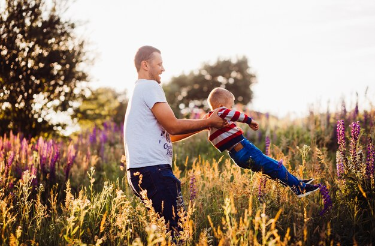
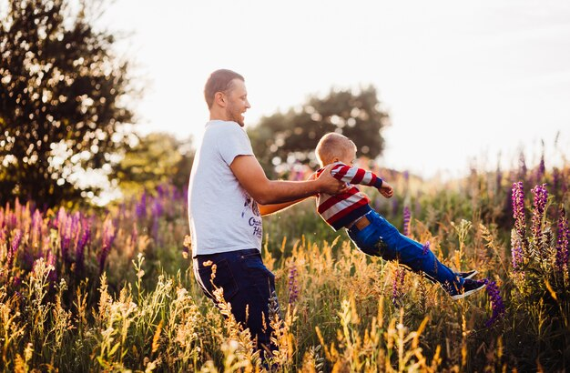

« Papas solidaires » est une association créée par des personnes sensibilisées à la cause du droit des pères et des enfants en cas de séparation. Elle regroupe uniquement des bénévoles, hommes et femmes, qui ont vécu ou partagé la séparation d’un parent d’avec ses enfants lors d’éclatement de la cellule familiale.
Les objectifs de notre association :
- ☛De défendre le droit de l’enfant à bénéficier de l’amour et de l’éducation de ses parents, en particulier de son père, en cas d’éclatement de la famille.
- ☛Oeuvrer pour que la loi et son application garantissent une réelle égalité du père et de la mère face à l’enfant en cas de séparation du couple.
- ☛Nous assurons une veille des dernières réformes et textes juridiques liés au divorce et à l’hébergement des enfants en cas de séparation. Nous pouvons vous apporter des conseils pratiques et juridiques.
- Tous les bénévoles concernés ou non, directement ou indirectement par le problème , hommes ou femmes , sont les bienvenus , n’hésitez pas à nous contacter